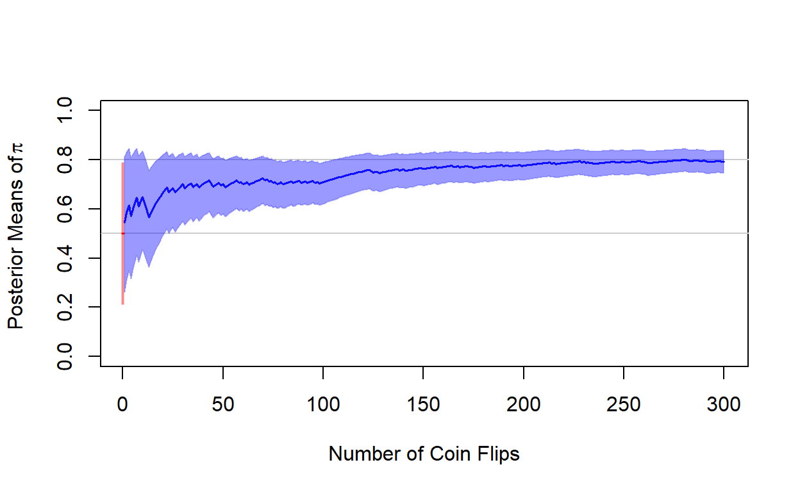
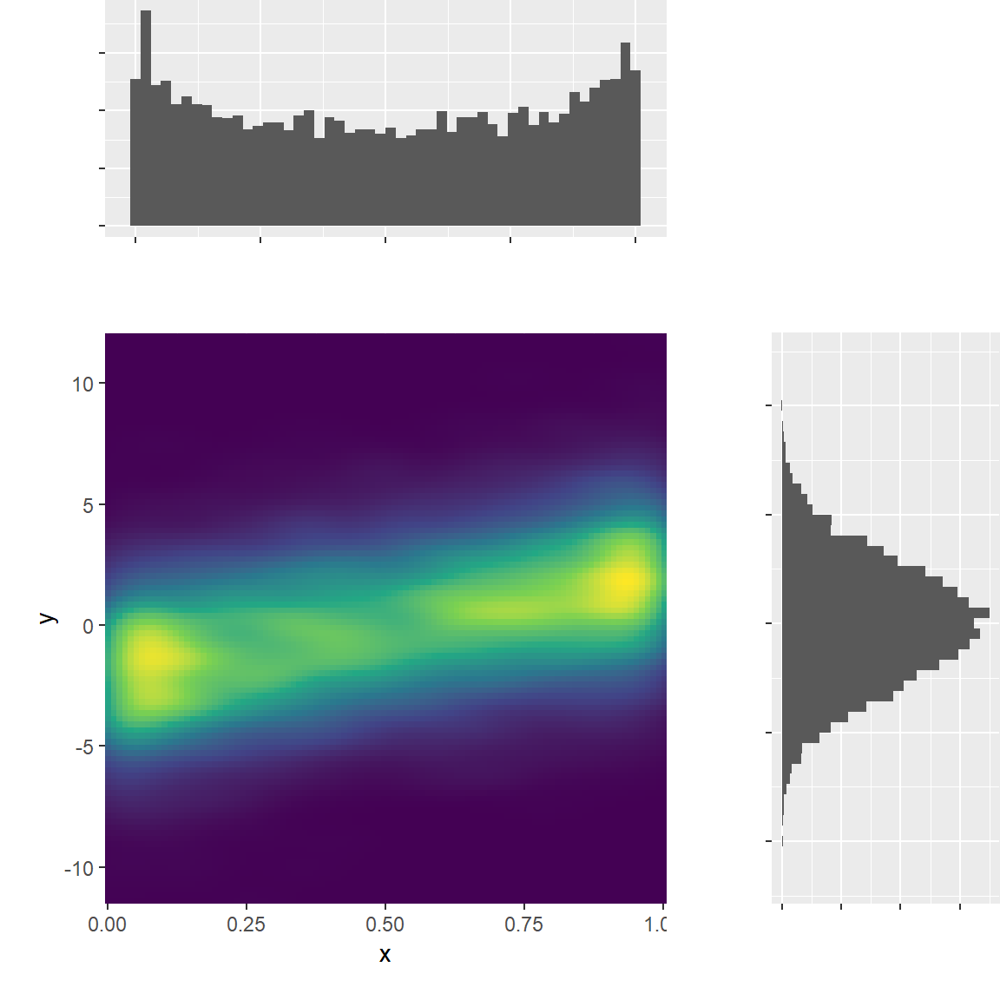

Bayesian and frequentist inference: Interpretations
Credible intervals
You run a Bayesian analysis to estimate an effect of interest. Your goal is to test the hypothesis that the effect of interest is positive.
You calculate the posterior median, the 95% credible interval, and the 99% credible interval.
The values are as follows:
- Posterior median: \(1.00\)
- 95% credible interval: \([0.02; 1.98]\)
- 99% credible interval: \([-0.16; 2.16]\)
Frequentists would interpret a result with analogous confidence intervals as “statistically significant at the 5%, but not at the 1% level”.
What statements could a Bayesian make about the posterior probability in support of the hypothesis of a positive effect?
\(p\)-values
Suppose you have a sample of size \(N=150\), from which you recover the sample mean of a continuous variable \(X\). Your estimate for the sample mean is \(\bar{X} = 129\), your estimate for the standard error of the sample mean is \(\hat{\sigma}_{\bar{X}} = 15\).
Let your null hypothesis be that the sample mean is equal to 100. Recover the \(p\)-value for a two-tailed test. What does this number mean?
2 * pnorm(-abs((129 - 100)/ 15))Hint: You can click the light bulb icon to see the solution.
A comparison of two plots
In the previous lecture, we saw two types of plots that vaguely resemble one another. The first is the plot from our coin flip experiment, shown below. The second is the trace plot, which we encountered in the context of the convergence diagnostics Gibbs sampler.
Carefully distinguish what the two types of plots show and what they are used for. Discuss how the meaning of the “iterations” shown along the horizontal \(x\)-axis differs between the two plots.

Random variables
According to the English-language Wikipedia, a “random variable (also called random quantity, aleatory variable, or stochastic variable) is a mathematical formalization of a quantity or object which depends on random events”. Its distribution is “a probability measure on the set of all possible values of the random variable”. We usually think of these distributions in terms of known probability distributions (i.e., pmf’s or pdf’s).
Considering this definition and what you have learned today:
- Why do frequentists think of data, but not of parameters as random variables?
- Why do Bayesians think of parameters, but not of data as random variables?
Confidence intervals
Somebody tries to convince you that a 95% confidence interval contains the true population parameter with 95% probability. Why is this incorrect?
Posterior summaries and convergence diagnostics
Prompt
This exercise presents you with three triplets of Markov Chains.
These are preloaded in the code chunk below as chains1,
chains2, and chains3.
For each object,
- Diagnose the chains for any potential problems using the following
tools from the
codapackage:- Trace plots
- Autocorrelation plots
- Potential scale reduction statistic \(\hat{R}\) for within and between chain variance
- Interpret your diagnosis: What specific problems of non-convergence, if any, do you find?
# Trace plot
traceplot(chains1)
# Autocorrelation plot
autocorr.plot(chains1)
# Gelman-Rubin diagnostic
gelman.diag(chains1)
# proceed analogously for chains2 and chains3Diagnosing, interpreting, and reporting results from a Gibbs sampler for the linear model
The linear model
Since this is the first regression model we use in a Bayesian estimation framework, it is worthwhile repeating some fundamentals of statistical modeling. Feel free to skip these explanatory sections if you feel you are sufficiently familiar with these concepts.
Likelihood
The likelihood gives the generative model or data-generating process for the outcome, \(y\).
The linear model stipulates that the observed outcomes \(y_i\) for every unit \(i\) can be expressed as realizations from a normal distribution with unit-specific mean or location parameter \(\mu_i\) and a constant (i.e., general) variance or scale parameter \(\sigma^2\).
\[y_i \sim \text{N}(\mu_i, \sigma^2) \text{ for all }i = 1,...N\]
or, alternatively,
\[y_i = \mu_i + \epsilon_i \text{ for all }i = 1,...N \\ \epsilon_i \sim \text{N}(0, \sigma^2)\] The latter notation makes explicit that each observed \(y_i\) can be thought of as a combination of a systematic component, \(\mu_i\), and a stochastic error component, \(\epsilon_i\), which follows a zero-mean normal distribution with constant variance \(\sigma^2\).
The systematic component
The systematic component is represented by the mean parameter \(\mu_i\). In fact, \(\mu_i\) is merely a transformed parameter: It is a linear function of unit-specific data \(\mathbf{x}_i\) and coefficients \(\beta\).
The formula below illustrates this, using the row vector notation \(\mathbf{x}_i^{\prime} \beta\) as shorthand for the scalar notation \(\beta_1 + \beta_2 x_{i, 2} + ...+\beta_k x_{i,k}\).
\[\mu_i = \underbrace{\mathbf{x}_i^{\prime} \beta}_{= \beta_1 + \beta_2 x_{i, 2} + ...+\beta_k x_{i,k}} \text{ for all }i = 1,...N\]
Parameters and priors
Parameters are the unknown quantities in our models whose posterior distributions we seek to infer.
In the linear model, all coefficients \(\beta\) as well as the variance \(\sigma^2\) are model parameters. As a variance parameter, \(\sigma^2\) must take on strictly positive values.
In Bayesian data analysis, all parameters must be assigned priors. For our Gibbs sampler, we assign uninformative, vague priors for all parameters:
- Independent normal priors for all coefficients: \(\beta_k \sim \text{Normal}(0, 100) \text{ for } k = 1,..., K\)
- An inverse Gamma prior for the variance: \(\sigma^2 \sim \text{Gamma}^{-1}(20, 200)\).
Our Gibbs sampler will then update these distributions and eventually sample from the posterior target distributions of the five parameters.
Data
We model respondents’ support for the AfD (sup_afd,
measured on an 11-point scale ranging from -5 to 5) as a function of
respondents’ pro-redistribution preferences (se_self) and
anti-immigration preferences (la_self).
Both se_self and la_self are measured on
11-point scales:
se_selfranges from values (0) “less taxes and deductions, even if that means less social spending” to (10) “more social spending, even if that means more taxes and deductions”.la_selfranges from values (0) “facilitate immigration” to (10) “restrict immigration”.
The model formula is given by
\[\mathtt{sup\_afd} = \beta_1 + \beta_2 \mathtt{se\_self} + \beta_3 \mathtt{la\_self} + \epsilon\]
Diagnose the estimates
The code chunks below contain preloaded posterior draws from a Gibbs
sampler of the linear model. The object is named
gibbs_draws.
Diagnose the estimates for signs of non-convergence using (at least) traceplots and the Gelman-Rubin diagnostic.
# Trace plot
traceplot(gibbs_draws)
# Gelman-Rubin diagnostic
gelman.diag(gibbs_draws)Summarize the estimates
The code chunk below contains code that pools the posterior draws across all chains. The resulting objects is a data frame, where each column holds the stacked posterior draws of a given parameter.
Summarize the posterior distribution in terms of posterior medians,
posterior standard deviations, and the 95% credible interval using
apply().
# Pool posterior draws across chains
pooled_gibbs_draws <- do.call(rbind.data.frame, gibbs_draws)# Pool posterior draws across chains
pooled_gibbs_draws <- do.call(rbind.data.frame, gibbs_draws)
# Summarize using apply
round(apply(pooled_gibbs_draws, 2, function(x)
c("Median" = median(x),
"SD" = sd(x),
quantile(x, c(.025, .975)))), 2)What are your substantive conclusions?
Probability distributions
Probability distributions in statistical modeling and inference
In statistical modeling and statistical inference, we commonly encounter probability distributions in two distinct roles:
- As distributional characterizations of data-generating processes of outcome variables (e.g., “each single flip of a fair coin is a draw from a Bernoulli distribution with probability parameter 0.5”).
- As distributional characterizations of inferential uncertainty about model parameters, either in the form of sampling distributions (in frequentist inference) or in the form of prior and posterior distributions (in Bayesian inference).
Matching distributions and outcomes
To get familiar with some common distributions, briefly skim the top info boxes in the linked Wikipedia articles. They typically convey some central information, such as:
- The conventional notation of the distribution
- Its parameters (and their constraints)
- The support of the distribution
- Mathematical formulas for the pdf/pmf, CDF, and moments (mean, variance, etc)
- Visualizations of prototypical distributions given a selection of parameters
- Pareto distribution
- Bernoulli distribution
- Weibull distribution
- Beta distribution
- Categorical distribution
- Poisson distribution
Which of these distribution would you most likely use to model the following outcomes?
- Individuals’ time spent in unemployment before reemployment
- Countries’ unemployment rates
- Voters’ vote choices in a multi-party election
- Countries’ income distributions
- Individuals’ decisions to turnout in an election
- Parliamentarians’ number of missed plenary sessions
Bivariate density distributions
Statistical inference often involves the estimation of joint distribution of multiple model parameters. The below shows a hypothetical joint distribution of two correlated parameters.
- The marginal distributions are characterized by two distributions we
encountered as part of the lecture.
- Can you guess what these distributions are?
- Can you make any approximate statements about the parameters that characterize these distributions?
- What can you say about the sign of the correlation between the two?
## Warning: The dot-dot notation (`..density..`) was deprecated in ggplot2 3.4.0.
## i Please use `after_stat(density)` instead.
## This warning is displayed once every 8 hours.
## Call `lifecycle::last_lifecycle_warnings()` to see where this warning was
## generated.